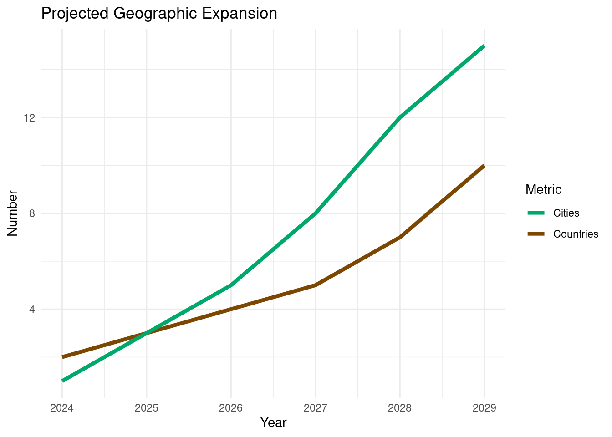

Future Growth
RwandaMarket is committed to sustainable growth and innovation. Our strategic plan outlines ambitious yet achievable goals to expand our reach, enhance our technological capabilities, and deepen our impact in East Africa and beyond.
Expansion Plans
Geographic Expansion
- Short-term (1-2 years):
- Establish physical presence in other major Kenyan cities (Mombasa, Kisumu)
- Launch e-commerce operations in Uganda and Tanzania
- Expand our artisan network in Rwanda to include more rural cooperatives
- Medium-term (3-5 years):
- Enter markets in Ethiopia and Burundi
- Establish regional distribution centers to optimize logistics
- Explore partnerships with major African e-commerce platforms for cross-listing products
- Long-term (5+ years):
- Expand operations to West and Southern African markets
- Consider strategic acquisitions of complementary businesses
- Establish RwandaMarket as a pan-African brand for authentic, ethically sourced products
Product Line Expansion
- Introduce RwandaMarket-branded products, starting with coffee and tea blends
- Expand into new categories such as gourmet foods, wellness products, and home fragrances
- Collaborate with renowned African designers for exclusive, limited-edition collections
- Develop a line of sustainable, eco-friendly packaging and home goods
Technology Development Roadmap
- Enhanced AI-driven Personalization (Year 1-2):
- Implement advanced recommendation engines using machine learning
- Develop predictive analytics for inventory management and demand forecasting
- Blockchain Integration (Year 2-3):
- Expand our blockchain-based authentication system to cover all product categories
- Implement smart contracts for more efficient and transparent transactions with suppliers
- Augmented Reality (AR) Shopping Experience (Year 3-4):
- Develop AR features for mobile app to allow customers to visualize products in their space
- Create virtual showrooms for B2B clients to explore product collections
- Advanced Supply Chain Optimization (Year 4-5):
- Implement IoT sensors for real-time tracking and quality control throughout the supply chain
- Develop AI-powered route optimization for last-mile delivery

Strategic Initiatives
- Sustainability Focus:
- Achieve carbon neutrality in our operations by 2028
- Implement a circular economy model for packaging and returns
- Launch a sustainability certification program for our artisan partners
- Education and Skill Development:
- Establish a RwandaMarket Academy to provide e-commerce and digital skills training to artisans
- Partner with universities in Kenya and Rwanda to offer internships and research opportunities
- Financial Inclusion:
- Develop a microfinance program for our artisan network
- Explore partnerships with mobile money providers to enhance financial services for our suppliers and customers
- Community Impact:
- Launch a “RwandaMarket Foundation” to support education and healthcare initiatives in artisan communities
- Implement a profit-sharing model with key artisan cooperatives
Key Performance Indicators (KPIs)
To track our growth and impact, we will focus on the following KPIs:
- Revenue growth (target: 50% year-over-year)
- Number of artisans supported (target: 25% annual increase)
- Carbon footprint reduction (target: 10% annual reduction)
- Customer satisfaction score (target: maintain above 4.5/5)
- B2B solution adoption rate (target: 30% annual growth)
RwandaMarket is poised for significant growth in the coming years. By focusing on geographic expansion, product diversification, technological innovation, and impactful community initiatives, we aim to become a leading force in African e-commerce and cross-border trade facilitation.